A 10-day brand sprint for Bounce
in a world quick to judge, bounce believes people drowning in debt aren't just numbers.
it's all about helping folks bounce back from debt and find their own version of happily ever after
designing for a debt collection company? that's a challenge. bounce saw it as a chance to shake things up.
it's like a wellness journey—debt as a step toward a better life. that's reflected in their look, calm and
transformative. think wellness products or life-changing experiences, all wrapped up in their brand.
at the heart of it all? their logo. blending their name with freedom—a bird taking flight. it captures the
essence of bouncing back and finding your own freedom. shout-out to hadar for making that logo magic
happen!
Client | Bounce
Creative Direction | Inbal Lapidot Vidal, Eden Vidal
Brand Design | Kate Holub, Hadar Lozon, Stanislava Shestakova
2D, Motion | Artem Samoilyk


 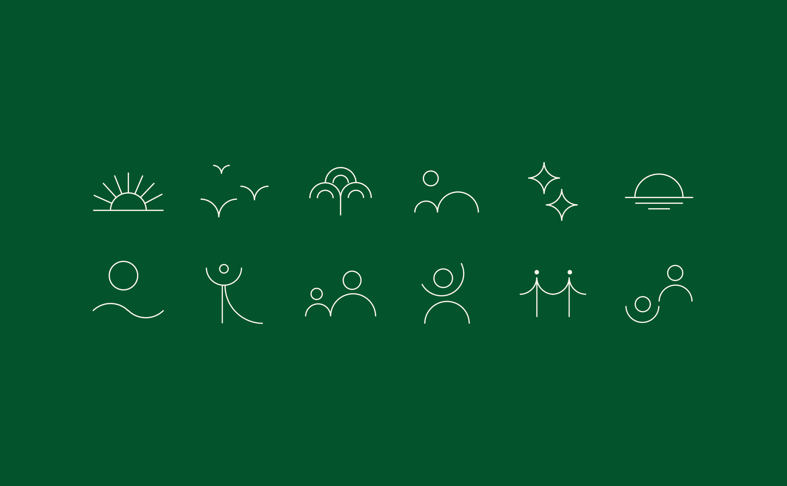
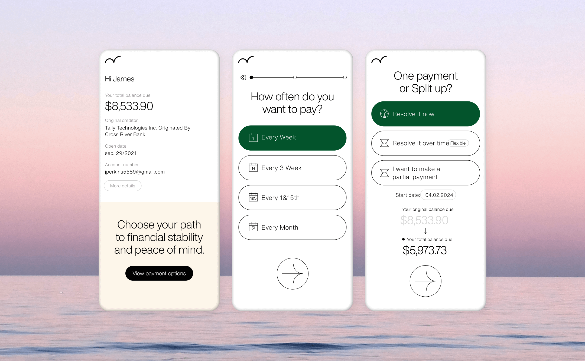
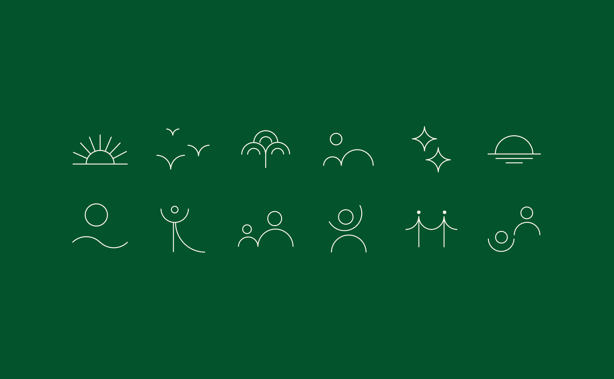
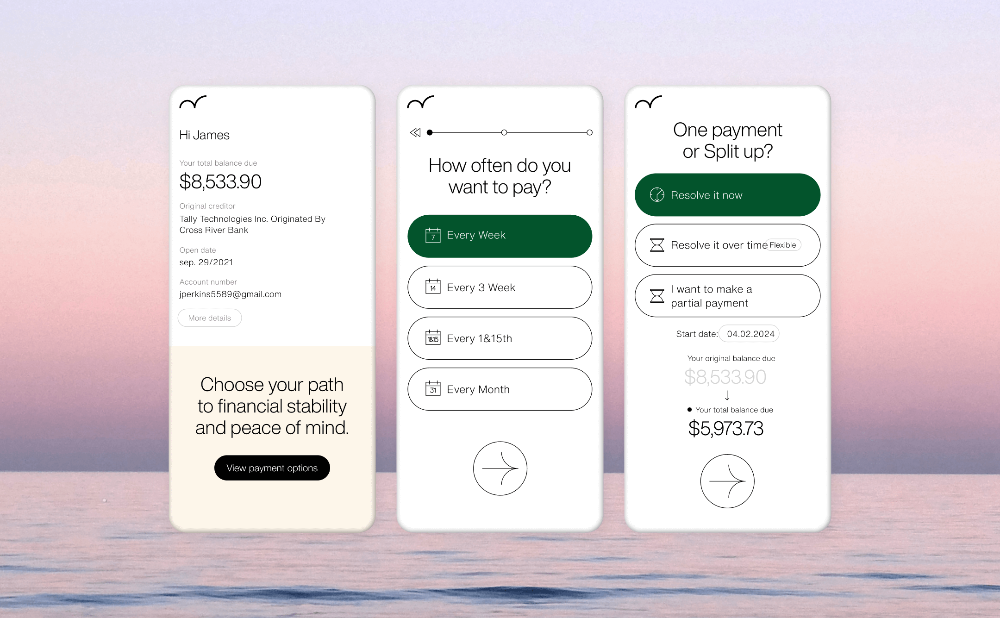
 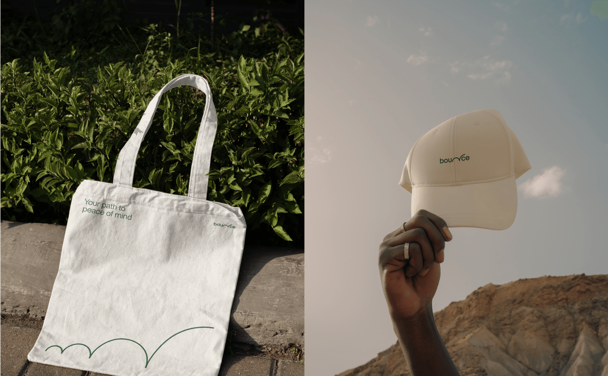
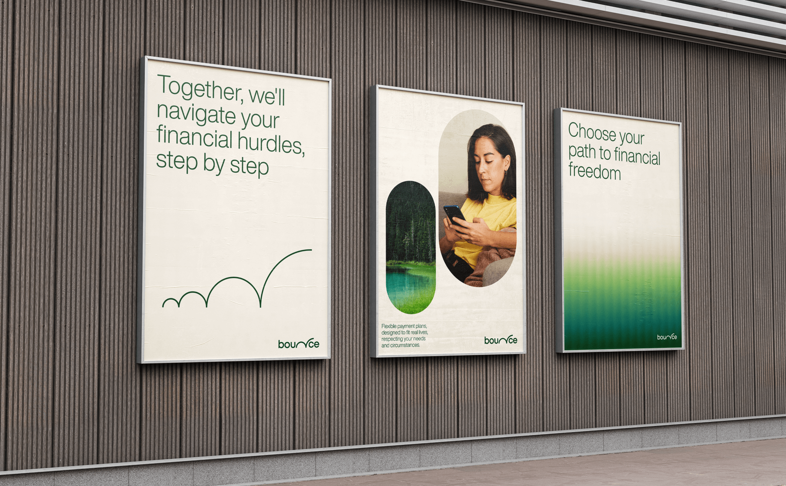
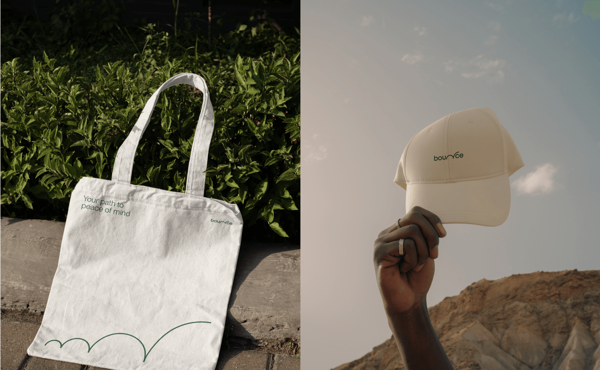
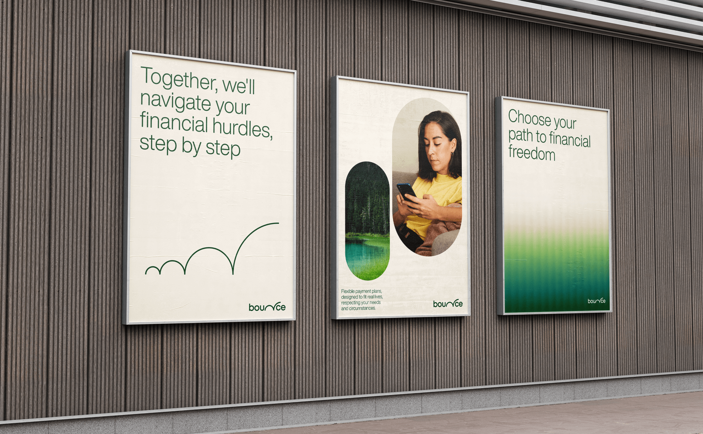
 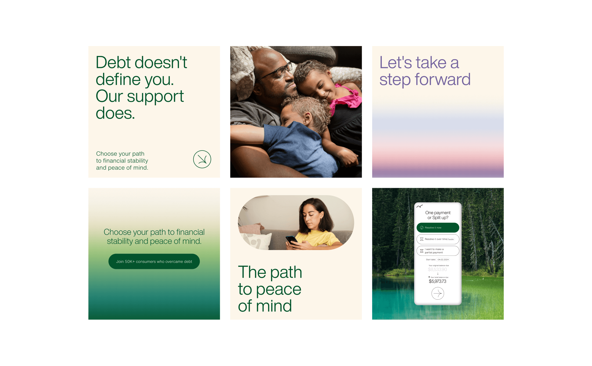
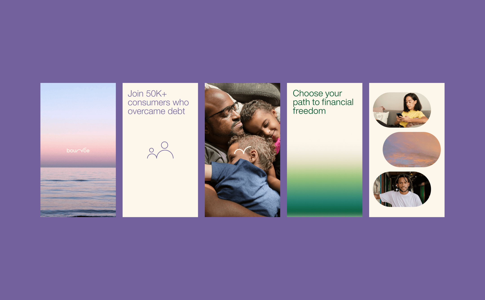
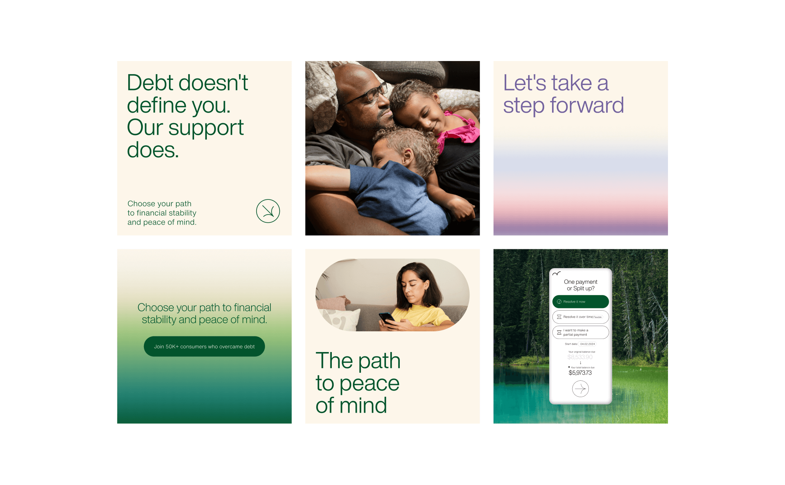
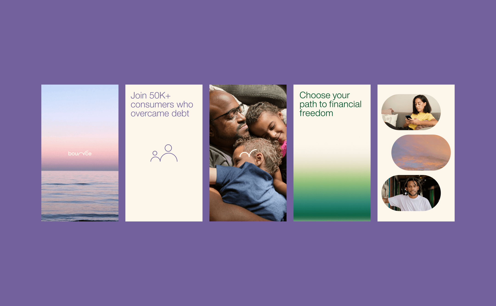
 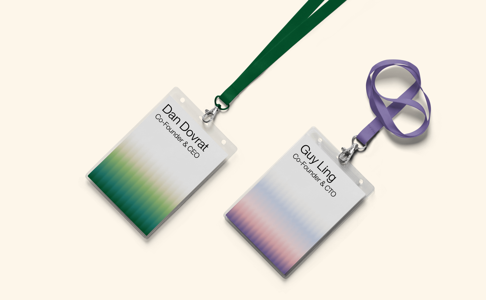
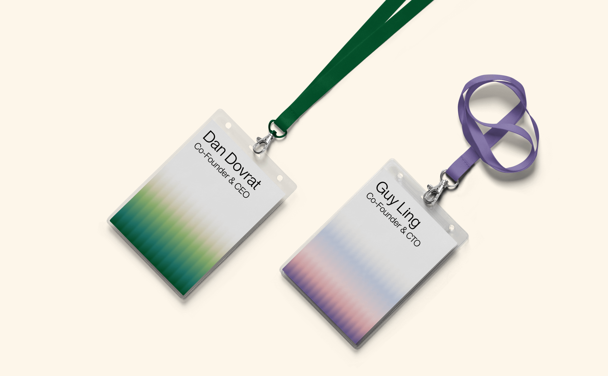